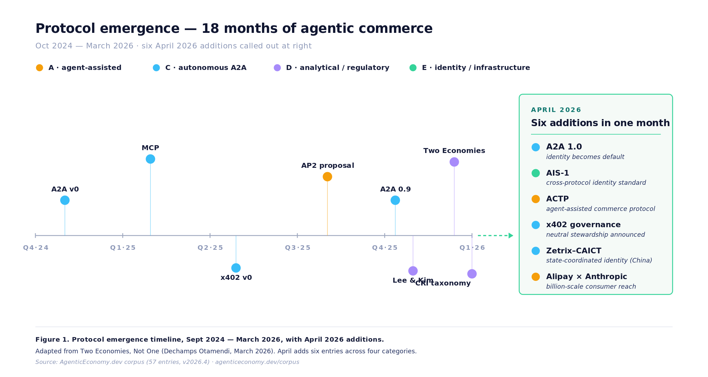

In brief
- A2A 1.0 shipped with Signed Agent Cards. Agent-to-agent communication finally has cryptographic identity.
- Alibaba entered with ACTP. The first agent protocol from a payments platform at billion-user scale.
- x402 went to the Linux Foundation. Third protocol this year to leave a single-sponsor home.
- Two serious academic papers landed — formal welfare economics, and the first granular EU-law map.
- Settlement is still unconsolidated. The rail that wins the top of the funnel shapes the rules for everyone downstream.
The thesis of April
Three weeks ago A2A was a whitepaper with good intentions. This week it has cryptographic identity and a version number that starts with 1. One of the largest payments platforms in the world picked a side. Three protocols this year have left their sponsor’s house for a neutral foundation.
Agentic commerce spent two years looking like slideware. In April it started looking like plumbing — slow, unglamorous, and real.

1. Trust — A2A hits 1.0, and identity standards get an umbrella
Google shipped Signed Agent Cards as part of A2A v1.0. Every agent now carries a verifiable credential: before acting on another agent’s request, a counterparty can cryptographically check who you are, who you work for, and what you are authorised to do.
Without identity, A2A was email for robots — messages, no transactions, no accountability. The enterprise question — who is liable when my agent does something wrong — now has a technical answer to point at. The legal answer is still pending; the legal answer always is.
This is the most consequential protocol update of the quarter. Combined with MCP (Model Context Protocol — Anthropic’s standard for exchanging tool access and context between agents and models), the two primitives that serious agent-to-agent commerce needs — context and identity — are finally both in place.
At the protocol level, A2A now has identity. At the cross-protocol level, AIS-1 is an attempt to make those credentials portable. AIS-1 — a pre-standards body for cross-protocol identity and capability attestation — launched this month. It joins ongoing IETF work that has been approaching the same problem bottom-up. These efforts almost always converge — the alternative is duplicated work, which nobody has time for. If the same contributor names show up on both signatory lists by June, convergence is confirmed.
2. Scale — Alibaba enters with ACTP
Alibaba and Alipay announced ACTP (Agent Commerce Transfer Protocol) — a delegated-authorisation framework letting agents transact on Alipay rails under human-set constraints.
Western protocol work so far: Google, Coinbase, Anthropic, Visa. Alipay’s billion-scale consumer reach brings the entire market the Western debate has been arguing about for two years — and that market just picked a side.
I read ACTP as Category A — human still the counterparty, agent as delegate. Same lane as AP2 (Visa / Mastercard / PayPal) rather than competing with x402 or ACP. My expectation is that Tencent or WeChat Pay will not leave this lane uncontested for long — a counter-launch within 90 days feels plausible, not certain.
3. Governance — x402 goes to the Linux Foundation
Coinbase handed x402 to the Linux Foundation. It joins ACP (Stripe / OpenAI) and AP2 (Visa / Mastercard / PayPal) in the tier where a neutral body now owns the specification.
Adoption numbers lie. The cleaner signal that a protocol is real is when the original sponsor gives up governance — effectively saying out loud, we would rather be a good citizen of a larger standard than the landlord of a smaller one. x402 is the third protocol this year to make that call.
The protocols still inside a single company — MCP at Anthropic, A2A at Google — are the ones to watch next. A2A probably migrates before the end of Q3. MCP will take longer; Anthropic has less market pressure to let go.
4. Law and economics — the field got its first serious papers
Lucier et al. (Microsoft Research) published a formal welfare model for agentic markets — assumptions, proofs, results. Nannini et al. (European University Institute) mapped agentic commerce onto EU law — consumer protection, competition, data protection, product liability — and identified where each regime breaks.
Most academic writing on agentic commerce so far has been citation-padding on top of blog posts. Lucier et al. is the first economics paper in the field I would hand to a serious theorist without apologising for the subject. Nannini et al. is the first legal analysis granular enough for a regulator to act on.
The Nannini finding that stuck with me: EU consumer-protection law assumes a human reads the terms. That assumption does not survive autonomous delegation. Brussels will have to legislate for it. Whether they do it well is a different question.
5. Settlement — still wide open
Six settlement-layer startups active this month — Nava, Humwork, Locus, Natural (closed a $9.8M seed), Nevermined, PayCrow — plus Circle opened a stablecoin testnet for agent payments. Six companies, one testnet, no dominant player.
Everyone wants to know who wins settlement. The more useful question is which rail consolidates around agent flows — stablecoins, cards (Visa AP2), or HTTP-native protocols (x402). Whichever rail wins the top of the funnel shapes the compliance regime and the pricing model for everyone downstream.
I lean stablecoins — not because they are better technology, but because they solve cross-border settlement better than cards ever will, and cross-border is where agents will live. Ask me again in November.
Five calls for May
- [Hard call] A2A v1.0 gets at least one visible production deployment.
- [Soft read] OpenAI announces an A2A-adjacent move in response to Alibaba — or stays silent and cedes the payments conversation.
- [Hard call] Tencent or WeChat Pay counter-launches a protocol of their own.
- [Soft read] The first real regulatory statement on agentic commerce comes from the FCA rather than Brussels.
- [Soft read] The first meaningful consolidation signal appears in the settlement layer.
Come back in a month. I will tell you what I got right and wrong.
Editorial close
The market is still fragmented. After April, it is harder to argue that agentic commerce is hypothetical. Identity is hardening. Delegation is becoming formalised. Governance is starting to decentralise. The stack is still incomplete — it is no longer imaginary.
Monthly. No filler.
Go deeper — pick your format
Every paper in the research corpus ships in four formats: the paper itself, a short video, a podcast episode, and an infographic. Commute → podcast. Team meeting → video. Research log → paper. LinkedIn scroll → infographic. One body of work, four ways in.
Founder and Independent Researcher · AgenticEconomy.dev · ORCID 0009-0007-1033-6519